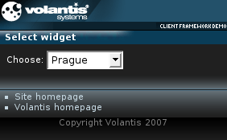

This widget defines a single or multiple selection control, for example a dropdown list.

<widget:select id="chooser"> <widget:option value="Ankara">Ankara</widget:option> <widget:option value="Beograd">Beograd</widget:option> <widget:option value="Berlin">Berlin</widget:option> </widget:select>
<widget:display property="chooser#value"/>
<?xml version="1.0" encoding="UTF-8"?>
<html xmlns="http://www.w3.org/2002/06/xhtml2"
xmlns:mcs="http://www.volantis.com/xmlns/2006/01/xdime/mcs"
xmlns:template="http://www.volantis.com/xmlns/marlin-template"
xmlns:widget="http://www.volantis.com/xmlns/2006/05/widget">
<head>
<title>Select widget</title>
<link rel="mcs:theme" href="/themes/main.mthm"/>
<link rel="mcs:layout" href="/layouts/main.mlyt"/>
</head>
<body>
<template:apply href="templates/demo-main.xdtpl">
<template:binding name="title" value="Select widget"/>
<template:binding name="content">
<template:complexValue>
<div style="mcs-layout: 'layouts/2x2.mlyt'">
<span style="mcs-container: 'top-left'">Choose:</span>
<widget:select style="mcs-container: 'top-right'" id="chooser">
<widget:option value="Ankara">Ankara</widget:option>
<widget:option value="Beograd">Beograd</widget:option>
<widget:option value="Berlin">Berlin</widget:option>
<widget:option value="Bratislava">Bratislava</widget:option>
<widget:option value="Budapest">Budapest</widget:option>
<widget:option value="Bucharest">Bucharest</widget:option>
<widget:option value="Cracow">Cracow</widget:option>
<widget:option value="Ljubljana">Ljubljana</widget:option>
<widget:option value="Nicosia">Nicosia</widget:option>
<widget:option value="Podgorica">Podgorica</widget:option>
<widget:option value="Prague">Prague</widget:option>
<widget:option value="Riga">Riga</widget:option>
<widget:option value="Sofia">Sofia</widget:option>
<widget:option value="Tallinn">Tallinn</widget:option>
<widget:option value="Tirana">Tirana</widget:option>
<widget:option value="Valletta">Valletta</widget:option>
<widget:option value="Vienna">Vienna</widget:option>
<widget:option value="Vilnius">Vilnius</widget:option>
<widget:option value="Zagreb">Zagreb</widget:option>
</widget:select>
</div>
</template:complexValue>
</template:binding>
</template:apply>
</body>
</html>
| Name | Purpose |
|---|---|
| div | A section used to add extra structure to documents. Style sheets can be used to control the presentation. |
| span | Inline element used to set a style. |
| widget:display | An inline widget element used to display some text content. It may be associated with a widget property. In such cases, the displayed content represents the value of the selected property. |
| widget:option | A single item on a list. |
| widget:select | Defines a single or multiple selection control, for example a dropdown list. |
| Core attributes | Attributes that are common to XDIME 2 elements. |